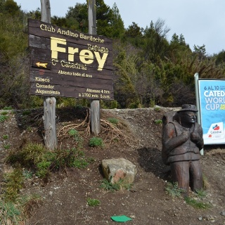

Refugio Frey
Ubicación
Es la forma convencional de llegar al refugio comienza a un costado de la playa de estacionamiento del Cerro Catedral, donde un gran cartel de madera con letras blancas anuncia el Refugio Frey, visible desde la parada de colectivos. Seguir las flechas que orientan al comienzo y una vez enfilada la ancha huella caminar unos 30 minutos hasta que la ancha huella se transforma en sendero. Este se dirige hacia el sur hasta llegar al Valle del arroyo Van Titter donde comienza a subir. Tras dos horas de marcha se cruza el puente sobre el mencionado arroyo, para llegar 20 minutos más tarde a Piedritas, parada clásica de descanso (recomendamos no ingresar). Una hora más y se llega al Refugio Frey, a 1700 mts. de altitud.